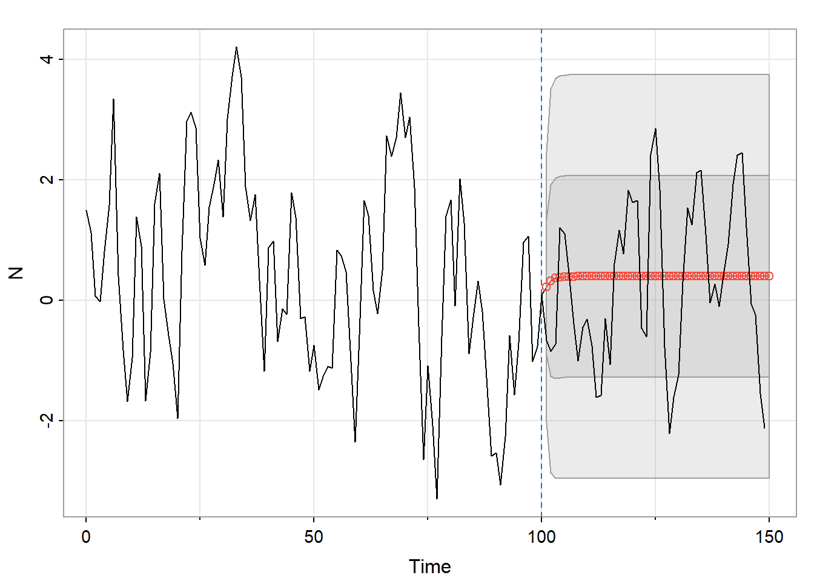
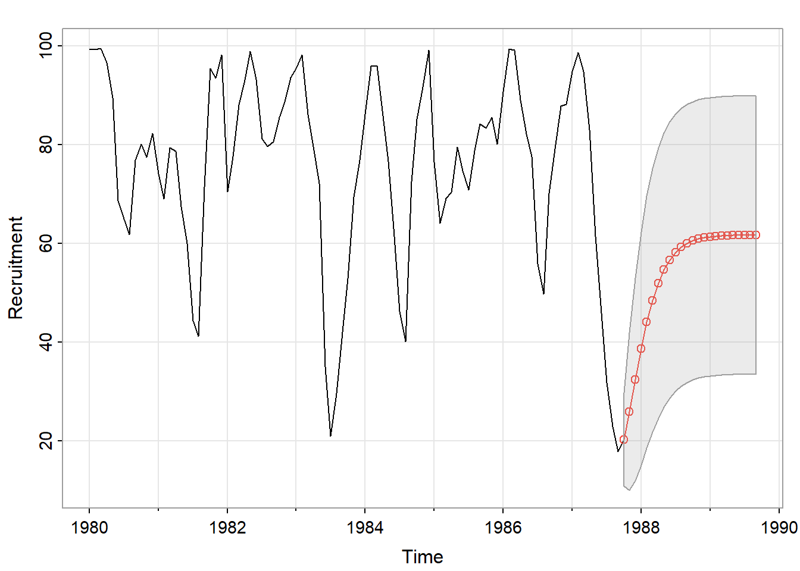
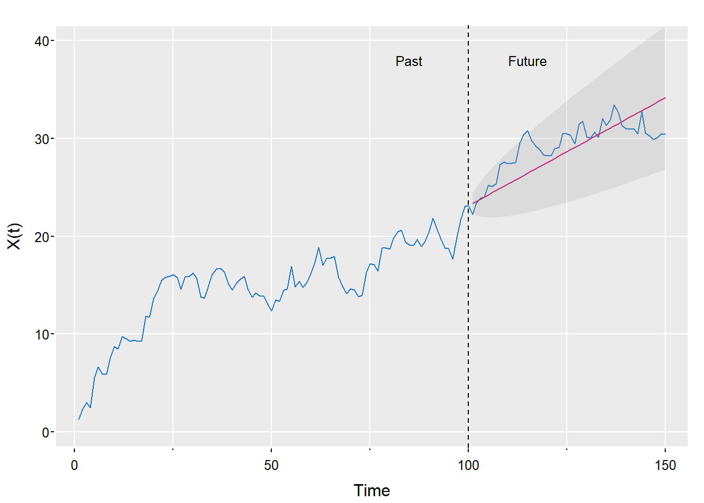

Time Series Forecasting
An Introduction
Abstract
Introduce models used to forecast time series. Introduction
This technical note introduces the basic components of widely used statistical models of time series data. Such models support the understanding of underlying processes. They are also heavily used to forecast future values, which is the emphasis of this note.
The examples and methods presented here are from Shumway and Stoffer (2025) and the R package astsa (Stoffer 2025).
Mathematical Framework
Data derived from a random process
Statistical applications are often based on one or more data frames in which each row represents an observation and each column represents a variable of interest. Consider for example the following predator-prey data (Table 1 and Figure 5), based on the record of snowshoe hare (astsa::Hare) and lynx (astsa::Lynx) pelts purchased by the Hudson’s Bay Company of Canada from 1845 to 1935.
# A tibble: 91 × 3
yr hare lynx
<dbl> <dbl> <dbl>
1 1845 19.6 30.1
2 1846 19.6 45.2
3 1847 19.6 49.2
4 1848 12.0 39.5
5 1849 28.0 21.2
# ℹ 86 more rowsThe distinction of time series analysis is that observations are indexed by time, and are not assumed to be statistically independent. Instead, time series data are typically modeled as a realization of a random process of the following form.1
\[ \begin{align} X_\bullet (t) = (X_1 (t), \ldots, X_d (t)) \in \mathbb{R}^d \end{align} \tag{1}\]
If the number of data columns is two or greater \((d \ge 2)\), the process is said to be multivariate. Otherwise, if \(d = 1\) the process is said to be univariate, and the notation is simplified to \(X (t)\).2
In our example there are two data columns (hare, lynx), so that \(d = 2\), the unit of time is one year, and the sampling frequency is once per year.
The random process is idealized to span all time \((t \in \mathbb{Z})\), but the data of course span some finite period, \(\tau_T\), of length \(T\).
\[ \begin{align} \tau_T &= \{ t_0, \; t_0 + 1, \ldots, t_f \} \\ t_0 &= \text{ initial data index} = \min \tau_T \\ t_f &= \text{ final data index} = \max \tau_T \\ T &= \text{ number of observatons } = t_f - t_0 + 1 \\ \nu_T &= \tau_T - t_0 = \{ 0, 1, \ldots, T-1 \} \end{align} \tag{2}\]
The expected value of the random process may be modeled by various functions of time: a constant, a linear trend, a seasonal component (periodic function), etc.
\[ \begin{align} m_\bullet (t) &= E \{ X_\bullet (t) \} \end{align} \tag{3}\]
Stationarity
In an additive model (which is most common), the residual random process, \(X_\bullet (t) - m_\bullet (t)\) , is assumed to be second-order stationary.3 That is, if we shift \(X_\bullet (\cdot)\) by any number of time units \(s\) to obtain a new process \(Y_\bullet (\cdot)\), we assume that the respective covariance structures of \(X_\bullet (\cdot)\) and \(Y_\bullet (\cdot)\) are the same.
\[ \begin{align} Y_\bullet (t) &= \mathcal{B}^s \{ X_\bullet (\cdot) \} (t) \\ &= X_\bullet (t - s) \end{align} \tag{4}\]
Here \(\mathcal{B}\) denotes the back-shift operator that shifts time by one unit, so that \(\mathcal{B}^s\) (that is, \(s\) repeated applications of \(\mathcal{B}\)) shifts time by \(s\) units. Then second-order stationarity can be expressed as follows.
\[ \begin{align} Cov \{ X_a (t + u), X_b (t) \} &= Cov \{ Y_a (t + u), Y_b (t) \} \\ &= Cov \{ X_a (t + u - s), X_b (t - s) \} \\ \\ & \text{for all } s \in \mathbb{Z} \text{ and } a, b \in \{ 1, \ldots, d \} \end{align} \]
ACF: autocorrelation function
Setting \(s = t\) in the last expression we have
\[ \begin{align} Cov \{ X_a (t + u), X_b (t) \} &= Cov \{ X_a (u), X_b (0) \} \end{align} \tag{5}\]
Consequently, second-order stationarity enables one to define and estimate the following auto-covariance function.
\[ \begin{align} \gamma_{\bullet, \bullet} (u) &= \left \{ \gamma_{a, b} (u) \right \}_{a, b = 1}^d \\ \\ \text{where} \\ \gamma_{a, b} (u) &= Cov \{ X_a (t + u), X_b (t) \} \\ &= Cov \{ X_a (u), X_b (0) \} \end{align} \tag{6}\]
Although \(\gamma_{\bullet, \bullet} (u)\) is a symmetric matrix at \(u = 0\), it is not generally symmetric at \(u \ne 0\). The symmetry relation we do have is that matrix \(\gamma_{\bullet, \bullet} (-u)\) is the transpose of matrix \(\gamma_{\bullet, \bullet} (u)\).
\[ \begin{align} \gamma_{a, b} (-u) &= Cov \{ X_a (t - u), X_b (t) \} \\ &= Cov \{ X_a (t), X_b (t + u) \} \\ &= Cov \{ X_b (t + u), X_a (t) \} \\ &= \gamma_{b, a} (u) \end{align} \tag{7}\]
In particular, \(\gamma_{a, a} (\cdot)\) is an even function: \(\gamma_{a, a} (-u) = \gamma_{a, a} (u)\).
Consequently, the time-reversed process \(Y_\bullet (t) = X_\bullet (-t)\) has the same auto-covariance structure as the original process, allowing for this matrix transposition.
The autocorrelation (ACF) function \(\rho_{\bullet, \bullet}(\cdot)\) is the following scaled version of the auto-covariance function.
\[ \begin{align} \rho_{\bullet, \bullet} (u) &= \left \{ \rho_{a, b} (u) \right \}_{a, b = 1}^d \\ \\ \text{where} \\ \rho_{a, b} (u) &= corr \{ X_a (u), X_b (0) \} \\ &= \frac{\gamma_{a, b} (u)}{\sqrt{\gamma_{a, a} (0) \; \gamma_{b, b} (0)}} \end{align} \tag{8}\]
PACF: partial autocorrelation function
The partial autocorrelation function (PACF)4 is a refinement of the ACF and a useful diagnostic tool.
We first recall the related concept of conditional expectation. If \(X, Y, Z_\bullet = \{Z_1, \ldots, Z_K\}\) are random variables having a joint probability distribution, then we denote the conditional expectation of \(X\) and \(Y\) given \(Z_\bullet\) as follows.
\[ \begin{align} \tilde{X} &= E(X \; | \; Z_\bullet) \\ \tilde{Y} &= E(Y \; | \; Z_\bullet) \end{align} \tag{9}\]
Of all possible functions of \(Z_\bullet\), the conditional expectation above minimizes the mean squared approximation error.
\[ \begin{align} MSE \left \{ X, \; f(Z_\bullet) \right \} &= E \left \{ (X - f(Z_\bullet))^2 \right \} \\ MSE \left \{ Y, \; g(Z_\bullet) \right \} &= E \left \{ (Y - g(Z_\bullet))^2 \right \} \end{align} \tag{10}\]
If \(X, Y, Z_\bullet\) have a joint normal distribution, then \(\tilde{X}\) is an affine function of \(Z_\bullet\), that is, a constant plus a linear combination of the components of \(Z_\bullet\), and so is \(\tilde{Y}\).
In general, however \(X, Y, Z_\bullet\) may be jointly distributed, we denote by \(\hat{X}\) and \(\hat{Y}\) the affine functions of \(Z_\bullet\) that minimize the mean squared approximation error.
\[ \begin{align} \hat{\beta}_\bullet &= \arg \min_{\beta_\bullet} \; MSE \left \{ X, \; \beta_0 + \sum_{k = 1}^K \beta_k Z_k \right \} \\ \hat{X} &= \hat{\beta}_0 + \sum_{k = 1}^K \hat{\beta}_k Z_k \end{align} \tag{11}\]
\(\hat{Y}\) is similarly defined. In the normal case we have \(\tilde{X} = \hat{X}\) and \(\tilde{Y} = \hat{Y}\).
Then the partial correlation between \(X\) and \(Y\) given \(Z_\bullet\) is the correlation between the respective \(X\) and \(Y\) residuals, as follows.
\[ \begin{align} \rho_{X, Y \bullet Z_\bullet} &= corr \left (X - \hat{X} \; , \; Y - \hat{Y} \right) \end{align} \tag{12}\]
In the time series context we introduce the PACF with reference to a univariate, stationary Gaussian process, \(\mathcal{N}(t)\), having zero mean.5 6
At lags \(|u| \le 1\) the partial autocorrelation is defined as the autocorrelation \(\rho (u)\). For \(u > 1\) the PACF is defined to be the correlation between \(\mathcal{N}(t + u)\) and \(\mathcal{N}(t)\) conditioned on the intervening variables \(\mathcal{N}(t + 1), \ldots, \mathcal{N}(t + u - 1)\). Let \(\Delta_u\) denote these intervening integer increments \(\{ 1, 2, \ldots, u-1 \}\).
\[ \begin{align} \Delta_u &= \{ 1, 2, \ldots, u-1 \} \\ -\Delta_u &= \{ -1, -2, \ldots, 1-u \} \\ \\ & \text{ for } u \ge 2 \end{align} \]
The calculations are as follows.
\[ \begin{align} \hat{\mathcal{N}}(t + u \; | -\Delta_u) &= E \left \{ \mathcal{N}(t + u) \; | \; \mathcal{N}(t + u + \nu), \; \nu \in -\Delta_u \right \} \\ &= \beta_1 \mathcal{N}(t + u - 1) + \cdots + \beta_{u-1} \mathcal{N}(t + 1) \end{align} \tag{13}\]
\[ \begin{align} \hat{\mathcal{N}}(t \; | \; \Delta_u) &= E \left \{ \mathcal{N}(t + u) \; | \; \mathcal{N}(t + \nu), \; \nu \in \Delta_u \right \} \\ &= \beta_1 \mathcal{N}(t + 1) + \cdots + \beta_{u-1} \mathcal{N}(t + u - 1) \end{align} \tag{14}\]
The conditional expectation is linear in the conditioning variables thanks to the assumption that \(\mathcal{N}(t)\) is a Gaussian process having zero mean. In the non-Gaussian case the linear combination is defined as the one that minimizes the mean-squared approximation error.
The coefficients in the linear combination are shared by \(\hat{\mathcal{N}}(t)\) and \(\hat{\mathcal{N}}(t + u)\) but are applied in reverse order. This is because the time-reversed process \(\mathcal{N}(-t)\) has the same auto-covariance structure as the original process \(\mathcal{N}(t)\).7
The partial autocorrelation function is now defined as the correlation of the residual variables:8
\[ \begin{align} \rho (u | u) &= corr \left (\mathcal{N}(t + u) - \hat{\mathcal{N}}(t + u \; | -\Delta_u) \; , \; \mathcal{N}(t) - \hat{\mathcal{N}}(t \; | \; \Delta_u) \right) \end{align} \tag{15}\]
The calculation of the PACF can be based on the recursive Durbin-Levinson algorithm9:
\[ \begin{align} \rho (u | u) &= \frac{\rho(u) - \sum_{\nu = 1}^{u - 1} \rho(u-1 | \nu) \; \rho(u-\nu) }{1 - \sum_{\nu = 1}^{u - 1} \rho(u-1 | \nu) \; \rho(\nu) } \\ \\ \text{where} \\ \\ \rho (u | \nu) &= \rho (u-1 | \nu) \; - \; \rho (u | u) \; \rho (u-1 | u-\nu) \end{align} \tag{16}\]
Operations on Time Series
Transformation of Each Observation
The data transformations used on independent observations are applicable to time series data. For example, in the case of Johnson and Johnson quarterly earnings (Figure 6), we see that the transformed time series, \(Y(t) = \log_e (X(t))\), can be more closely approximated by a linear trend.
Smoothing
In addition to the data transformations used on independent observations, we often want to smooth out local fluctuations in time series data to show the overall trend more clearly.
Running Average
A running average (also called a moving average) of a random process \(X(\cdot)\) is a new process \(Y(\cdot)\) formed as as a local average of \(X\) values. A weighted running average, with weights \(\{ w_u \}_u\) takes the following form.
\[ \begin{align} Y (t) &= \sum_{u = -K}^K w_u \; X (t - u) \\ \\ & \text{where } \\ \\ w_u &\ge 0 \quad \text{for all } u \\ 1 &= \sum_{u = -K}^K w_u \end{align} \tag{17}\]
As an example, Figure 1 shows a 5-year simple moving average
\[ \begin{align} Y_\bullet (t) &= \frac{1}{5} \sum_{u = -2}^2 X_\bullet (t - u) \end{align} \tag{18}\]
Figure 7 shows the original global temperature data. As mentioned, the operation smooths out local fluctuations to show the overall trend more clearly.
Exponential Smoothing
Exponential smoothing (also called an exponentially weighted moving average) assigns a prescribed weight \(\alpha \in (0, 1)\) to the current observation and exponentially decaying weights to prior observations.
For a mathematically defined process \(X(\cdot)\) spanning all time, the operation can be represented by the following formula.
\[ \begin{align} Y(t) &= \alpha \; \sum_{u \ge 0} (1 - \alpha)^u X(t - u) \end{align} \tag{19}\]
For finite time series data the operation can be implemented by the following recursive algorithm.
\[ \begin{align} Y(t) &= \begin{cases} X(t) & \text{for } t = t_0 \\ \alpha \; X(t) + (1 - \alpha) \; Y(t - 1) & \text{for } t > t_0 \end{cases} \end{align} \tag{20}\]
Differences of Successive Observations
Time series data often exhibit trends over time. The data fluctuate around some level that varies consistently and can be modeled as some function of time, \(m(t)\). Suppose we want to extract the fluctuations about \(m(t)\) from the original data. One approach is to estimate \(m(t)\) and then form the residual series. This is called “de-trending”. Another approach is to apply an operator that removes the trend directly.
For example, suppose that the process \(X(t)\) has a linear trend \(m(t) = \beta_0 + \beta_1 t\).
\[ \begin{align} m(t) &= E\{ X(t) \} = \beta_0 + \beta_1 t \end{align} \tag{21}\]
Then forming successive differences removes the linear trend.
\[ \begin{align} E \left \{ X(t) - X(t-1) \right \} &= \beta_1 \end{align} \tag{22}\]
Here we have applied the differencing operator \(\nabla\).
\[ \begin{align} \{\nabla \; X(\cdot) \} \; (t) &= X(t) - X(t-1) \\ \\ \text{where } \\ \\ \nabla &= \mathcal{I} - \mathcal{B} \end{align} \tag{23}\]
The DJIA stock index (Figure 8) illustrates the differencing operation. Returns are defined as the log-ratio of successive closing values, calculated as the difference in successive values of the logarithm of the closing values.
To remove a polynomial trend of degree \(d\), one can apply \(\nabla^d\), meaning \(d\) repeated applications of \(\nabla\).
Seasonal Differencing
To remove a seasonal component one can apply a variant of \(\nabla\), namely seasonal differencing, \(\nabla_\sigma\): 10
\[ \begin{align} \nabla_\sigma &= \mathcal{I} - \mathcal{B}^\sigma \end{align} \tag{24}\]
Here \(\sigma\) denotes the number of time indices that span one season. For analyses of economic or business performance, seasonal differences are often used to show the difference between current values versus those from one year prior. In that context one would set \(\sigma = 4\) for quarterly data, \(\sigma = 12\) for monthly data, etc.
Integration: Restoring Differenced Data
Time series analysis often entails differencing the original process \(Y(\cdot) = \nabla \; X(\cdot)\) and then building a model of the differenced process \(\hat{Y}(\cdot) \sim Y(\cdot)\). We can apply the model to the original process using the following simple recursive algorithm.
\[ \begin{align} \hat{X} (t) &= \begin{cases} X(t) & \text{ for } t = t_0 \\ \hat{Y}(t) + \hat{X}(t-1) & \text{ for } t > t_0 \end{cases} \end{align} \tag{25}\]
Filtering
Running averages and successive differences are each an example of a linear, time-invariant filter, having the following general form.
\[ \begin{align} Y_\bullet (t) &= a_{\bullet, \bullet} (\cdot) \; * \; X_\bullet (\cdot) \\ &= \sum_u a_{\bullet, \bullet} (u) \; \times \; X_\bullet (t - u) \end{align} \tag{26}\]
where \(a_{\bullet, \bullet} (\cdot)\) is a sequence of \(d \times d\) matrices and \(*\) denotes discrete convolution.
For example, here’s the 5-year moving average above expressed in this format.
\[ \begin{align} a_{\bullet, \bullet} (u) &= \begin{cases} \frac{1}{5} I & \text{ for } |u| \le 2 \\ 0 & \text{ for } |u| > 2 \end{cases} \end{align} \tag{27}\]
And here’s the difference operator \(\nabla\) in the filtering format.
\[ \begin{align} a_{\bullet, \bullet} (u) &= \begin{cases} I & \text{ for } u = 0 \\ -I & \text{ for } u = 1 \\ 0 & \text{ otherwise } \end{cases} \end{align} \tag{28}\]
A moving average operation smooths the time series on which it operates. That is, it allows low-frequency components to pass, while diminishing high-frequency components. Therefore the moving average operation is categorized as a low-pass filter. The differencing operator can be categorized as a high-pass filter.
In signal-processing applications a linear, time-invariant filter \(a_{\bullet, \bullet} (\cdot)\) may be designed to extract certain types of signals that are contaminated by noise.(Hamming 1989)
Model Components
The process of building a statistical model (time series or not) is typically cyclic:
- examine data (or model residuals)
- propose model (or refinement of current model)
- fit proposed model
- examine model residuals
One might continue this cycle until the model residuals seem to be reasonably free of trend and autocorrelation.
Covariates and Trend
Time series and other statistical data sets are often collected in order to study the possible effects of one set of variables on one or more of the remaining variables.
Consider, for example, the cardiovascular mortality data shown in Figure 9, where mortality is modeled as a response to temperature and the level of airborne particulate matter. In this example we can formulate the expected value of mortality in the following terms.
\[ \begin{align} m(t, X_{2:3}(t)) &= E \left \{ X_1(t) \; | \; X_2(t), \; X_3(t) \; \right \} \end{align} \]
where
\[ \begin{align} X_1(t) = M(t) &= \text{mortality count in week } t \\ X_2(t) = T(t) &= \text{temperature } (^\circ F) \text{ in week } t \\ X_3(t) = P(t) &= \text{level of airborne particulate matter in week } t \end{align} \]
Each of the three components of \(X_\bullet (t)\) exhibits an annual periodicity, as one might expect. The textbook authors initially propose a model for \(X_1(t)\) of the following form11.
\[ \begin{align} X_1(t) &= m(t, X_{2:3}(t)) + W(t)\\ \\ \text{ where } \\ \\ m(t, X_{2:3}(t)) &= \beta_0 + f(t) + \beta_2 X_2(t) + \beta_3 X_3(t) \\ \\ W(\cdot) &\sim wn(0, \sigma_W^2) \end{align} \]
Here \(wn(0, \sigma_W^2)\) denotes an uncorrelated sequence having zero mean and variance \(\sigma_W^2\), referred to as white noise.
According to this model12 the pattern over time of \(X_1(t)\) is captured by the mean over time, \(m(t, X_{2:3}(t))\). Once the mean level is accounted for, the residual series \(W(t) = X_1 (t) - m(t, X_{2:3}(t))\) is modeled as being free of autocorrelation. The model is consistent with the assumption that, apart from a trend component, weekly numbers of cardiovascular deaths are independent, conditioned on temperature and particulate levels.
Later in the text (page 155) the authors refine this initial model. After examining the autocorrelation function (ACF) of the residual series (no longer labeled \(W(t)\)), they develop an autocorrelated (\(AR(2)\)) model.
This is an example of the cyclic model-building process previously outlined. A model is developed, examined, and revised.
Auto-regression (AR)
Auto-regressive models are based on the idea that the current value of the series, \(X(t)\), can be approximated, or forecast, as a function of \(p\) past values, \(X(t−1), X(t−2), \ldots, X(t−p)\), which leads to the following formulation of an auto-regressive model of order \(p\), abbreviated as \(AR(p)\).
\[ \begin{align} X(t) &= \alpha \; + \; \sum_{\nu = 1}^p \phi_\nu X(t-\nu) \; + \; W(t) \\ \text{where } \\ \alpha &= \mu_X \; - \; \mu_X \; \sum_{\nu = 1}^p \phi_\nu \\ \\ W(t) &\sim wn(0, \sigma_W^2) \end{align} \tag{29}\]
That is, \(W(t)\) again denotes a residual “white noise” stationary process: free of autocorrelation and having zero mean.
Polynomial representation
The \(AR(p)\) model can also be expressed using the back-shift operator \(\mathcal{B}\) as follows.
\[ \begin{align} \left \{\phi (\mathcal{B}) \; (X(\cdot) - \mu_X) \right \} \; (t) &= W(t) \\ \\ \text{where } \\ \phi (z) &= 1 - \sum_{\nu = 1}^p \phi_\nu \; z^\nu \\ \text{so that } \\ \phi (\mathcal{B}) &= \mathcal{I} \; - \; \sum_{\nu = 1}^p \phi_\nu \mathcal{B}^\nu \end{align} \tag{30}\]
The polynomial \(\phi(\cdot)\) applied to the back-shift operator \(\mathcal{B}\) is an auto-regressive operator of order \(p\).
Now, the \(AR(p)\) model is defined to be that of a stationary process \(X(t)\), which constrains the coefficients of polynomial \(\phi(\cdot)\). Additional requirements that the model be causal13 and invertible14 restrict attention to polynomials \(\phi(\cdot)\) whose roots are all greater than unity in magnitude. This ensures that the multiplicative inverse function \(\phi (z)^{-1}\) is well defined and has a power series expansion for \(|z| \le 1\).15
AR(1)
Consider the \(AR(1)\) model. We have
\[ \begin{align} X(t) &= \mu_X \; + \; \phi_1 (X(t-1) - \mu_X) \; + \; W(t) \end{align} \]
so that
\[ \begin{align} W(t) &= (X(t) - \mu_X) \; - \; \phi_1 (X(t-1) - \mu_X) \\ &= \left \{ (\mathcal{I} - \phi_1 \mathcal{B}) \; (X(\cdot) - \mu_X) \right \} \; (t) \\ &= \left \{ \phi (\mathcal{B}) \; (X(\cdot) - \mu_X) \right \} \; (t) \end{align} \tag{31}\]
The auto-regressive polynomial \(\phi (\cdot)\) has degree 1.
\[ \begin{align} \phi (z) &= 1 \; - \; \phi_1 z & \text{ with } | \phi_1 | &< 1 \end{align} \]
The restriction on the real-valued coefficient \(\phi_1\) ensures that \(\phi (z) \ne 0\) for \(|z| \le 1\), as previously mentioned.
Now one can show by induction that for \(u > 0\) we have
\[ \begin{align} X(t) - \mu_X \\ &= \phi_1^u \; (X(t-u) - \mu_X) + \sum_{\nu = 0}^{u-1} \phi_1^\nu \; W(t-\nu) \end{align} \]
In the limit, as \(u \rightarrow \infty\), we see that \(\phi_1^u \rightarrow 0\) so that
\[ \begin{align} X(t) - \mu_X \\ &= \sum_{\nu = 0}^\infty \phi_1^\nu \; W(t-\nu) \\ &= \sum_{\nu = 0}^\infty \phi_1^\nu \; \mathcal{B}^\nu \; W(t) \end{align} \]
This result can be obtained more directly by inverting the auto-regressive operator \(\phi (\mathcal{B})\).
\[ \begin{align} W(t) &= \left \{ \phi (\mathcal{B}) \; (X(\cdot) - \mu_X) \right \} \; (t) \\ X(t) - \mu_X &= \left \{ \phi (\mathcal{B})^{-1} \; W(\cdot) \right \} (t) \end{align} \tag{32}\]
since
\[ \begin{align} \phi (z)^{-1} &= \frac{1}{1 - \phi_1 \; z} \\ &= \sum_{\nu = 0}^\infty \phi_1^\nu \; z^\nu & \text{ for } |z| \le 1 \end{align} \]
Based on these expressions one can show16 that the auto-covariance and autocorrelation functions of \(X(\cdot)\) take the following forms.
\[ \begin{align} \gamma_X (u) &= \frac{\phi_1^{|u|}}{1 - \phi_1^2} \; \sigma_W^2\\ \\ \rho_X (u) &= \phi_1^{|u|} \end{align} \tag{33}\]
Using the Durbin-Levinson algorithm, one can go on to show17 that the partial autocorrelation function (PACF) of \(X(\cdot)\) has the following simple form.
\[ \begin{align} \rho_X (u | u) &= \begin{cases} 1 & \text{ for } u = 0 \\ \phi_1 & \text{ for } u = \pm 1 \\ 0 & \text{ for } |u| > 1 \end{cases} \end{align} \tag{34}\]
AR(p)
As previously noted, an \(AR(p)\) model can be defined via a polynomial \(\phi(\cdot)\) that is applied to the back-shift operator \(\mathcal{B}\). The coefficients of \(\phi(\cdot)\) are real, but it is useful to apply the polynomial to the complex variable \(z\). From Equation 30 we have
\[ \begin{align} \phi(z) &= 1 \; - \; \sum_{\nu = 1}^p \; \phi_\nu \; z^\nu \end{align} \tag{35}\]
Also as previously mentioned, we require the roots of \(\phi(\cdot)\) to lie outside the closed unit disc, that is, to be greater than unity in magnitude. This requirement ensures that the model is stationary, causal, and invertible.
Consequently we have the following causal form of the model.18 19
\[ \begin{align} X(t) - \mu_X &= \left \{ \phi(\mathcal{B})^{-1} \; W(\cdot) \right \} (t) \\ &= \sum_{\nu = 0}^\infty \; \chi_\nu \; \mathcal{B}^\nu \; W(t) \\ &= \sum_{\nu = 0}^\infty \; \chi_\nu \; W(t - \nu) \\ \text{where } \\ & \chi_0 = 1 \\ \\ \text{and } \\ & \sum_{\nu = 0}^\infty \; |\chi_\nu| \; < \; \infty \end{align} \tag{36}\]
Equation 30 also shows that \(W(t)\) depends on current and past values of \(X(t)\), with past values terminating at \(X(t-p)\).
\[ \begin{align} W(t) &= \left \{\phi (\mathcal{B}) \; (X(\cdot) - \mu_X) \right \} \; (t) \\ &= X(t) - \mu_X \; - \; \sum_{\nu = 1}^p \phi_\nu \; (X(t-\nu) - \mu_X) \end{align} \]
From these equations one can show that for lag \(u > p\) we have
\[ \begin{align} \hat{X}(t+u \; | -\Delta_u) &= \mu_X + \sum_{\nu = 1}^p \; \phi_\nu \; (X(t + u - \nu) - \mu_X) \\ X(t+u) \; - \; \hat{X}(t+u \; | -\Delta_u) &= W(t+u) \end{align} \]
and
\[ \begin{align} \hat{X}(t \; | \Delta_u) &= \mu_X + \sum_{\nu = 1}^p \; \phi_\nu \; (X(t + \nu) - \mu_X) \\ X(t) \; - \; \hat{X}(t \; | \Delta_u) &= \sum_{\nu = 1}^p \; \phi_\nu \; (X(t - \nu) - X(t + \nu)) \; + W(t) \end{align} \]
Consequently, for \(u > p\) we have
\[ \begin{align} & Cov(X(t+u) \; - \; \hat{X}(t+u \; | -\Delta_u), \; X(t) \; - \; \hat{X}(t \; | \Delta_u)) \\ &= Cov(W(t+u), \; X(t) \; - \; \hat{X}(t \; | \Delta_u)) \\ &= Cov(W(t+u), \; X(t)) \; - \; Cov(W(t+u), \; \hat{X}(t \; | \Delta_u)) \\ &= 0 \end{align} \]
Therefore the PACF is zero at lags \(u > p\).
\[ \begin{align} \rho_X (u | u) &= 0 & \text{ for } u > p \end{align} \]
Moving Average (MA)
A moving average model of order \(q\) has the following form.
\[ \begin{align} X(t) &= \mu_X \; + \; W(t) \; + \; \sum_{\nu = 1}^q \; \theta_\nu \; W(t - \nu) \\ \text{where } \\ W(\cdot) &\sim wn(0, \sigma_W^2) \end{align} \]
Like AR models, an MA model can be expressed by applying a polynomial \(\theta(\cdot)\) to the back-shift operator \(\mathcal{B}\).
\[ \begin{align} X(t) - \mu_x &= W(t) \; + \; \sum_{\nu = 1}^q \; \theta_\nu \; W(t - \nu) \\ &= \left \{\mathcal{I} + \sum_{\nu = 1}^q \; \theta_\nu \; \mathcal{B}^\nu \right \} \; W(t) \\ &= \theta(\mathcal{B}) \; W(t) \\ \\ \text{where} \\ \theta (z) &= 1 + \sum_{\nu = 1}^q \; \theta_\nu \; z^\nu \end{align} \]
That is, \(X(\cdot)\) is filtered white noise, and is therefore stationary for any finite set of filter coefficients. But some constraint on polynomial \(\theta(\cdot)\) is required to eliminate ambiguity.
Invertibility
Consider the following two MA(1) models.20
\[ \begin{align} X(t) &= W(t) + \frac{1}{5} W(t-1) & \text{with } W(\cdot) \sim N(0, 25) \\ \\ Y(t) &= V(t) + 5 \; V(t-1) & \text{with } V(\cdot) \sim N(0, 1) \end{align} \]
The probability distributions of the two processes \(X(\cdot)\) and \(Y(\cdot)\) are identical21, so anyone attempting to identify the respective models could not distinguish them based on their realizations as time series data.
A solution to this conundrum is to follow the example set by AR models, namely by requiring the MA model to be invertible. That is, we require the roots of polynomial \(\theta(\cdot)\) to have magnitude greater than unity. In the example above we therefore choose the model for \(X(\cdot)\) rather than the model for \(Y(\cdot)\).
MA(1)
Consider the \(MA(1)\) model
\[ \begin{align} X(t) &= W(t) + \theta_1 W(t-1) \\ \\ &\text{ with } |\theta_1| < 1 \\ &\text{ and } W(\cdot) \sim wn(0, \sigma_W^2) \end{align} \tag{37}\]
Here is the auto-covariance function for this process.
\[ \begin{align} \gamma_X (0) &= \sigma_X^2 \\ &= \sigma_W^2 \; (1 + \theta_1^2) \\ \\ \gamma_X (1) &= Cov(W(t+1) + \theta_1 W(t), \; W(t) + \theta_1 W(t-1)) \\ &= \sigma_W^2 \; \theta_1 \\ \\ \gamma_X (u) &= 0 \quad \text{for } |u| \ge 2 \end{align} \tag{38}\]
And here is the corresponding autocorrelation function (ACF)22.
\[ \begin{align} \rho_X (u) &= \begin{cases} 1 & \text{ for } u = 0 \\ \frac{\theta_1}{1 + \theta_1^2} & \text{ for } u = \pm 1 \\ 0 & \text{ for } |u| \ge 2 \\ \end{cases} \end{align} \tag{39}\]
The PACF turns out to have the following form23.
\[ \begin{align} \rho_X (u | u) &= \frac{(- \theta_1)^u(1 - \theta_1^2)}{1 - \theta_1^{2 (u+1)}} & \text{ for } u \ge 2 \end{align} \tag{40}\]
MA(q)
An \(MA(q)\) model is generated by a polynomial \(\theta(\cdot)\) of degree \(q\) of the following form.
\[ \begin{align} \theta(z) &= 1 + \sum_{\nu = 1}^q \theta_\nu \; z^\nu \\ &= \sum_{\nu = 0}^q \theta_\nu \; z^\nu & \text{with } \theta_0 = 1 \end{align} \tag{41}\]
Applying \(\theta(\cdot)\) to the back-shift operator \(\mathcal{B}\), we have the following \(MA(q)\) model.
\[ \begin{align} X(t) &= W(t) + \sum_{\nu = 1}^q \theta_\nu \; W(t - \nu) \\ &= \left \{ \theta(\mathcal{B}) \; W(\cdot) \right \} (t) \\ \\ &\text{ with } W(\cdot) \sim wn(0, \sigma_W^2) \end{align} \tag{42}\]
With \(MA(1)\) serving as an example, it is easy to see that for an \(MA(q)\) model of \(X(\cdot)\), the auto-covariance function \(\gamma_X (u)\) and the autocorrelation function \(\rho_X (u)\) equal zero at lags \(|u| > q\).
\[ \begin{align} \text{for } X &\sim MA(q) \\ \text{and } |u| &> q \\ \\ \rho_X (u) &= 0 \end{align} \tag{43}\]
We require the roots of polynomial \(\theta(\cdot)\) to have magnitudes greater than unity to ensure that its multiplicative inverse function, \(\theta(z)^{-1}\), has a power series expansion valid for \(|z| \le 1\).
\[ \begin{align} \theta (z)^{-1} &= \frac{1}{\theta (z)} \\ &= \sum_{\nu = 0}^\infty \psi_\nu \; z^\nu \\ \\ & \text{for } |z| \le 1 \\ \\ & \text{where } \psi_0 = 1 \end{align} \tag{44}\]
Then \(\theta(\mathcal{B})^{-1}\) is well-defined, and we have
\[ \begin{align} W(t) &= \left \{ \theta(\mathcal{B})^{-1} \; X(\cdot) \right \} (t) \\ &= X(t) + \sum_{\nu = 1}^\infty \psi_\nu \; X(t - \nu) \end{align} \tag{45}\]
Equivalently, we have
\[ \begin{align} X(t) &= W(t) - \sum_{\nu = 1}^\infty \psi_\nu \; X(t - \nu) \end{align} \tag{46}\]
which can be viewed as an infinite-order auto-regressive model. Now for an \(AR(p)\), with \(p\) finite, the PACF can be shown to be non-zero at lag \(u = p\) (and zero thereafter). In the case of the \(MA(q)\) model, equivalent to an infinite-order \(AR\) model, the PACF tends to zero but does not vanish as \(|u| \rightarrow \infty\).
ARMA(p, q)
The \(AR(p)\) and \(MA(q)\) models can be combined into the following \(ARMA(p,q)\) model.
\[ \begin{align} \phi(\mathcal{B}) \; (X(\cdot) - \mu_X) &= \theta(\mathcal{B}) \; W(\cdot) & \text{with } W(\cdot) \sim wn(0, \sigma_W^2) \end{align} \tag{47}\]
so that
\[ \begin{align} X(t) &= \mu_X + \sum_{j = 1}^p \phi_j \; (X(t - j) - \mu_X) \; + \; W(t) \; + \; \sum_{k = 1}^q \theta_k \; W(t - k) \end{align} \tag{48}\]
or more succinctly
\[ \begin{align} X(t) &= \alpha + \sum_{j = 1}^p \phi_j \; X(t - j) \; + \; W(t) \; + \; \sum_{k = 1}^q \theta_k \; W(t - k) \\ \text{where } \\ \alpha &= \mu_x \; \left ( 1 - \sum_{j = 1}^p \phi_j \right ) \end{align} \tag{49}\]
Co-prime Polynomials
We must impose a restriction on the polynomials \(\phi(\cdot)\) and \(\theta(\cdot)\) in addition to requiring their respective roots to all have magnitude greater than unity. The additional requirement is that they have no roots in common.
Consider for example the following putative \(ARMA(1,1)\) model.24
\[ \begin{align} X(t) &= \beta_1 \; X(t - 1) \; + \; W(t) \; - \; \beta_1 \; W(t - 1) \\ \\ \text{so that } \\ \\ p(\mathcal{B}) \; X(\cdot) &= p(\mathcal{B}) \; W(\cdot) \\ \\ \text{where } \\ \\ p(z) &= 1 - \beta_1 \; z \quad \text{with } |\beta_1| < 1 \end{align} \tag{50}\]
The operator \(p(\mathcal{B})\) can be cancelled from both sides of the equation, leaving only a white noise process: \(X(\cdot) = W(\cdot)\).
More generally we require the elimination of any polynomial factors common to both \(\phi(\cdot)\) and \(\theta(\cdot)\). Equivalently, we require the roots of \(\phi(\cdot)\) to be distinct from those of \(\theta(\cdot)\).
Causal Form
The \(ARMA(p,q)\) model can be expressed in causal form as follows.25 26
\[ \begin{align} X(t) - \mu_X &= \phi(\mathcal{B})^{-1} \; \theta(\mathcal{B}) \; W(t) \\ &= \sum_{\nu = 0}^\infty \; \psi_\nu \; \mathcal{B}^\nu \; W(t) \\ &= \sum_{\nu = 0}^\infty \; \psi_\nu \; W(t - \nu) \\ \text{where } \\ & \psi_0 = 1 \\ \\ \text{and } \\ & \sum_{\nu = 0}^\infty \; |\psi_\nu| \; < \; \infty \end{align} \tag{51}\]
Inverted Form
It is also useful to invert the MA operator in an ARMA model to obtain the white noise process \(W(t)\) as a linear function of current and past values of \(X(t)\).27 28
\[ \begin{align} W(t) &= \theta(\mathcal{B})^{-1} \phi(\mathcal{B}) \; (X(t) - \mu_X) \\ &= \sum_{\nu = 0}^\infty \; \pi_\nu \; \mathcal{B}^\nu \; (X(t) - \mu_X) \\ &= \sum_{\nu = 0}^\infty \; \pi_\nu \; (X(t - \nu) - \mu_X) \\ \text{where } \\ & \pi_0 = 1 \\ \\ \text{and } \\ & \sum_{\nu = 0}^\infty \; |\pi_\nu| \; < \; \infty \end{align} \tag{52}\]
Linear Predictors
Problem Statement
Let \(X(\cdot)\) be a stationary process, whose \(T\) time indices, \(\tau_T\), begin with \(t_0\) and end with \(t_f\) per Equation 2.
For \(u \ge 1\) let \(\hat{X} (u | \tau_T)\) denote the linear least squares predictor of \(X(u + t_f)\) as an affine function of \(\{ X(t) \}_{t \in \tau_T}\).
\[ \begin{align} (\hat{\alpha}, \hat{\beta}_\bullet) &= \arg \min_{\alpha, \beta_\bullet} \; MSE \left \{ X(u + t_f), \; \alpha + \sum_{\nu = 0}^{T-1} \beta_\nu X(t_0 + \nu) \right \} \\ \hat{X} (u | \tau_T) &= \hat{\alpha} + \sum_{\nu = 0}^{T-1} \hat{\beta}_\nu X(t_0 + \nu) \end{align} \tag{53}\]
Linear Equations
We assume for the moment that the first and second-order statistics (mean, variance, auto-covariance, …) of \(X(\cdot)\) are known in order to express the coefficients \(\hat{\alpha}, \hat{\beta}_\bullet\) as functions of those statistics.
Consider the expression for mean-squared error (MSE).
\[ \begin{align} MSE \left \{ X(u + t_f), \; \alpha + \sum_{\nu = 0}^{T-1} \beta_\nu X(t_0 + \nu) \right \} \\ = E \left \{ \left ( X(u + t_f) \; - \alpha - \sum_{\nu = 0}^{T-1} \beta_\nu X(t_0 + \nu) \right )^2 \right \} \end{align} \tag{54}\]
We take the derivative of this expression with respect to each coefficient \((\alpha, \beta_\bullet)\) and set that derivative to zero to define \((\hat{\alpha}, \hat{\beta}_\bullet)\). For \(\hat{\alpha}\) we have
\[ \begin{align} 0 &= E \left \{ \left ( X(u + t_f) \; - \hat{\alpha} - \sum_{\nu = 0}^{T-1} \hat{\beta}_\nu X(t_0 + \nu) \right ) \right \} \\ &= \mu_X - \hat{\alpha} \; - \; \sum_{\nu = 0}^{T-1} \hat{\beta}_\nu \; \mu_X \end{align} \tag{55}\]
so that
\[ \begin{align} \hat{\alpha} &= \mu_X \left (1 - \sum_{\nu = 0}^{T-1} \hat{\beta}_\nu \right ) \end{align} \tag{56}\]
For each of the remaining coefficients \(\hat{\beta}_j\) we obtain
\[ \begin{align} 0 &= E \left \{ \left ( X(u + t_f) \; - \hat{\alpha} - \sum_{\nu = 0}^{T-1} \hat{\beta}_\nu X(t_0 + \nu) \right ) \; X(t_0 + j) \right \} \\ &= E \left \{ \left ( X(u + t_0 + T - 1) - \mu_x - \sum_{\nu = 0}^{T-1} \hat{\beta}_\nu \left ( X(t_0 + \nu) - \mu_x \right ) \right ) \; X(t_0 + j) \right \} \\ &= \gamma_X(u - j + T - 1) \; - \; \sum_{\nu = 0}^{T-1} \hat{\beta}_\nu \; \gamma_X(\nu - j) \end{align} \tag{57}\]
In vector-matrix notation we have the following linear system.29
\[ \begin{align} \Gamma[\cdot, \cdot] \; \hat{\beta}_\bullet &= \tilde{\gamma} [\cdot] \end{align} \tag{58}\]
where we set the vector and matrix indices to \(j, \nu \in \nu_T = \{ 0, \dots, T-1 \}\), so that
\[ \begin{align} \Gamma [j, \nu] & = \gamma_X(\nu - j) \\ \tilde{\gamma} [j] &= \gamma_X (u - j + T - 1) \end{align} \tag{59}\]
\(\Gamma\) is a covariance matrix, and is therefore non-negative definite. In fact \(\Gamma\) is positive definite (non-singular) unless \(X(\cdot)\) is a degenerate process30. In any case \(\hat{\beta}_\bullet\) can be defined by applying the inverse (or a generalized inverse) of \(\Gamma\) to \(\tilde{\gamma} [\cdot]\).
As noted above, we have assumed for the sake of discussion that the entire auto-covariance function \(\gamma_X (\cdot)\) is known. In practice such statistics must be estimated from the data. But direct estimation is not possible, due to the restricted range of differences in data indices.31 Instead, we must rely on a model of the process for such estimates.
ARMA Forecasting32
Notation and Assumptions
For presentation purposes we continue to assume that all random process parameters are known. And to simplify notation we first consider the case of a stationary Gaussian process \(\mathcal{N} (\cdot)\) having mean 0.
\[ \begin{align} \mathcal{N}(t) &\sim N(0, \sigma_\mathcal{N}^2) \quad \forall \; t \end{align} \tag{60}\]
In this case we can express the intended least squares linear approximation of \(\mathcal{N}(t)\) based on \(\{ \mathcal{N}(s) \}_{s \in \mathcal{S}}\) as a conditional expectation. In fact it will be convenient to be able to condition on the entire past of the random process covering indices \(\wp (t_f)\) up to and including the index \(t_f\) of the final observation.
\[ \begin{align} \wp (t_f) &= \left \{ s \in \mathbb{Z} \; | \; s \le t_f \right \} \end{align} \tag{61}\]
We adopt the following notation for the expectation of \(\mathcal{N}(u + t_f)\), the process at a future time, conditioned on \(\{ \mathcal{N}(s) \}_{s \le t_f}\), the history of the process prior to and including the final observation.
\[ \begin{align} \tilde{\mathcal{N}} (u \; | \; \wp (t_f)) &= E \left \{ \mathcal{N} (u + t_f) \; | \; \mathcal{N} (s), \; s \le t_f \right \} \end{align} \tag{62}\]
Due to the normality of \(\mathcal{N}(\cdot)\) this conditional expectation \(\tilde{\mathcal{N}}\) coincides with the linear least squares predictor \(\hat{\mathcal{N}}\), which is the defining linear predictor for non-normal processes.
\[ \begin{align} \hat{\mathcal{N}} (u \; | \; \wp (t_f)) &= \tilde{\mathcal{N}} (u \; | \; \wp (t_f)) \end{align} \tag{63}\]
We also assume that this Gaussian process follows an \(ARMA(p, q)\) model,
\[ \begin{align} \phi(\mathcal{B}) \; \mathcal{N} (\cdot) &= \theta(\mathcal{B}) \; W(\cdot) & \text{with iid } W(\cdot) \sim N(0, \sigma_W^2) \end{align} \tag{64}\]
where the roots of both the AR polynomial, \(\phi(\cdot)\), and the MA polynomial, \(\theta(\cdot)\), have magnitudes greater than unity. This ensures that \(\phi(\mathcal{B})^{-1}\) and \(\theta(\mathcal{B})^{-1}\) are well defined.
Predicted Variable
For fixed \(u \ge 1\) the predicted variable is \(\mathcal{N} (u + t_f)\), expressed below in both causal and inverted forms.
\[ \begin{align} \mathcal{N} (u + t_f) &= \sum_{\nu = 0}^\infty \; \psi_\nu \; W(u + t_f - \nu), \quad \psi_0 = 1 \end{align} \tag{65}\]
\[ \begin{align} W(u + t_f) &= \sum_{\nu = 0}^\infty \; \pi_\nu \; \mathcal{N} (u + t_f - \nu), \quad \pi_0 = 1 \end{align} \tag{66}\]
Since \(\pi_0 = 1\) the inverted form can also be expressed as an infinite AR model.
\[ \begin{align} \mathcal{N} (u + t_f) &= W(u + t_f) - \sum_{\nu = 1}^\infty \; \pi_\nu \; \mathcal{N} (u + t_f - \nu) \end{align} \tag{67}\]
Predictor: Causal Form
We now take the expectations in Equation 65 conditioned on \(\{ \mathcal{N} (s) \}_{s \le t_f}\).
\[ \begin{align} \tilde{\mathcal{N}} (u \; | \; \wp(t_f)) &= \sum_{\nu = 0}^\infty \; \psi_\nu \; E \left \{ W(u + t_f - \nu) \; | \; \mathcal{N} (s), \; s \le t_f \right \} \end{align} \tag{68}\]
Expanding \(\mathcal{N} (s)\) in causal form, we see that
\[ \begin{align} E \left \{ W(u + t_f - \nu) \; | \; \mathcal{N} (s), \; s \le t_f \right \} &= \begin{cases} 0 & \text{ for } \nu < u \\ W(u + t_f - \nu) & \text{ for } \nu \ge u \end{cases} \end{align} \]
This eliminates the first \(u\) terms in Equation 68 and simplifies the remaning terms.
\[ \begin{align} \tilde{\mathcal{N}} (u \; | \; \wp(t_f)) &= \sum_{\nu = u}^\infty \; \psi_\nu \; W(u + t_f - \nu) \end{align} \tag{69}\]
Predictor: Inverted Form
Next, applying the same conditional expectations to Equation 66, we have
\[ \begin{align} 0 &= \sum_{\nu = 0}^\infty \; \pi_\nu \; \tilde{\mathcal{N}} (u - \nu \; | \; \wp (t_f)) \end{align} \]
Since \(\pi_0 = 1\), this is equivalent to:
\[ \begin{align} \tilde{\mathcal{N}} (u \; | \; \wp (t_f) &= - \sum_{\nu = 1}^\infty \; \pi_\nu \; \tilde{\mathcal{N}} (u - \nu \; | \; \wp (t_f)) \end{align} \tag{70}\]
Note that the terms on the right can be simplified for \(\nu \ge u\).
\[ \begin{align} \tilde{\mathcal{N}} (u - \nu \; | \; \wp (t_f) &= \mathcal{N} (u - \nu + t_f) \quad \text{for } \nu \ge u \end{align} \]
Applying this result we have
\[ \begin{align} \tilde{\mathcal{N}} (u \; | \; \wp (t_f) &= - \sum_{\nu = 1}^{u - 1} \; \pi_\nu \; \tilde{\mathcal{N}} (u - \nu \; | \; \wp (t_f)) \; - \; \sum_{\nu = u}^\infty \; \pi_\nu \; \mathcal{N} (u - \nu + t_f) \end{align} \tag{71}\]
Predictor Residuals
We now examine the residuals from the linear least squares predictors defined above. Let \(R(\cdot \; | \; \wp (t_f))\) denote the residuals of the predictors.
\[ \begin{align} R(k \; | \; \wp (t_f)) &= \mathcal{N} (k + t_f) \; - \; \tilde{\mathcal{N}} (k \; | \; \wp (t_f)), \quad k \ge 1 \end{align} \tag{72}\]
Combining Equation 67 and Equation 71 we can express process \(R(u \; | \; \wp (t_f))\) for \(u \ge 1\) in a finite auto-regressive form (that expands with \(u\)).
\[ \begin{align} R(u \; | \; \wp (t_f)) &= \mathcal{N} (u + t_f) \; - \; \tilde{\mathcal{N}} (u \; | \; \wp (t_f)) \\ &= W(u + t_f) - \sum_{\nu = 1}^{u - 1} \; \pi_\nu \; R(u - \nu\; | \; \wp (t_f)) \end{align} \tag{73}\]
Similarly, combing Equation 65 and Equation 69 we can express \(R(u \; | \; \wp (t_f))\) as the following finite moving average of the white noise terms (where the number of terms again increases with \(u\)).
\[ \begin{align} R(u \; | \; \wp (t_f)) &= \mathcal{N} (u + t_f) \; - \; \tilde{\mathcal{N}} (u \; | \; \wp (t_f) \\ &= \sum_{\nu = 0}^{u - 1} \; \psi_\nu \; W(u + t_f - \nu) \end{align} \tag{74}\]
From this last result we see that the residual random variable \(R(u \; | \; \wp (t_f))\) has zero mean.
\[ \begin{align} E\{ R(u \; | \; \wp (t_f)) \} &= 0 \end{align} \tag{75}\]
Also note that \(R(u \; | \; \wp (t_f))\) and \(R(u + k \; | \; \wp (t_f))\) are correlated in general, for \(u \ge 1\) and \(k \ge 0\).
\[ \begin{align} E \left \{ R(u \; | \; \wp (t_f)) \times R(u + k \; | \; \wp (t_f)) \right \} &= \sigma_W^2 \; \sum_{\nu = 0}^{u - 1} \; \psi_\nu \; \psi_{\nu + k} \end{align} \tag{76}\]
Setting \(k = 0\) we obtain the following variance of \(R(u\; | \; \wp (t_f))\).
\[ \begin{align} E\{ R(u\; | \; \wp (t_f))^2 \} &= \sigma_W^2 \; \sum_{\nu = 0}^{u - 1} \; \psi_\nu^2 \end{align} \tag{77}\]
As \(u \rightarrow \infty\) this residual variance approaches the variance of the original process \(\mathcal{N} (\cdot)\).
\[ \begin{align} \lim_{u \rightarrow \infty} E\{ R(u\; | \; \wp (t_f))^2 \} &= \sigma_W^2 \; \sum_{\nu = 0}^\infty \; \psi_\nu^2 = \sigma_\mathcal{N}^2 \end{align} \tag{78}\]
Truncated Predictors33
Using the entire history of the process \(\{ \mathcal{N} (s), \; s \le t_f \}\) preceding and including the observed values, we’ve expressed the linear predictor \(\tilde{\mathcal{N}} (u \; | \; \wp(t_f))\) as an infinite moving average (Equation 69) and, alternatively, as an infinite auto-regression (Equation 71).
Now, restricting the predictor to the available data by using the \(ARMA(p, q)\) model, we recursively define the following “truncated” predictor, \(\breve{\mathcal{N}} (t \; | \; \tau_T)\), of the process \(\mathcal{N} (t)\) at time \(t\).
\[ \begin{align} \breve{\mathcal{N}} (u + t_f \; | \; \tau_T) &= \sum_{j = 1}^p \phi_j \; \breve{\mathcal{N}} (u - j + t_f \; | \; \tau_T) \\ &+ \sum_{k = 0}^q \theta_k \; \breve{W} (u - k + t_f \; | \; \tau_T) \\ \\ \text{where } \\ \\ \breve{W} (t \; | \; \tau_T) &= E \left \{ W(t) \; | \; \mathcal{N} (s), \; s \in \tau_T \right \} \end{align} \tag{79}\]
In this recursive definition, when the time index \(t\) is within the range \(\tau_T\) of observed values, the truncated predictor of the data value is just the data value. And the truncated predictor of the process prior to the data is set to the mean value of the process, which is zero here. That is
\[ \begin{align} \breve{\mathcal{N}} (t \; | \; \tau_T) &= \begin{cases} \mathcal{N} (t) & \text{if } t \in \tau_T \\ 0 & \text{if } t < t_0 \end{cases} \end{align} \tag{80}\]
In addition, the conditional expectation of the white noise terms are based on the \(ARMA(p, q)\) model as follows.
\[ \begin{align} \breve{W} (t \; | \; \tau_T) \\ &= \begin{cases} \phi (\mathcal{B}) \mathcal{N} (t) + (\mathcal{I} - \theta(\mathcal{B})) \; \breve{W} (t \; | \; \tau_T) & \text{if } t \in \tau_T \\ 0 & \text{if } t \not \in \tau_T \end{cases} \end{align} \]
As previously noted, we assume all parameters to be known, so that the polynomials \(\phi(\cdot)\) and \(\theta(\cdot)\) are completely specified. Then the system of equations above can be solved recursively, as illustrated in the next example.
ARMA(1, 1) Simulation34
We illustrate the truncated predictor for an \(ARMA(1, 1)\) model:
\[ \begin{align} \mathcal{N}(t) &= \phi_1 \; \mathcal{N}(t - 1) \; + \; W(t) \; + \; \theta_1 \; W(t - 1) \end{align} \tag{81}\]
The truncated predictor is
\[ \begin{align} \breve{\mathcal{N}} (u + t_f \; | \; \tau_T) &= \phi_1 \; \breve{\mathcal{N}} (u - 1 + t_f \; | \; \tau_T) \; + \; \breve{W} (u + t_f \; | \; \tau_T) \; + \; \theta_1 \; \breve{W} (u - 1 + t_f \; | \; \tau_T) \end{align} \tag{82}\]
Setting \(u = 1\), we have
\[ \begin{align} \breve{\mathcal{N}} (1 + t_f \; | \; \tau_T) &= \phi_1 \; \breve{\mathcal{N}} (t_f \; | \; \tau_T) \; + \; \breve{W} (1 + t_f \; | \; \tau_T) \; + \; \theta_1 \; \breve{W} (t_f \; | \; \tau_T) \\ &= \phi_1 \; \mathcal{N} (t_f \; | \; \tau_T) \; + \; 0 \; + \; \theta_1 \; \breve{W} (t_f \; | \; \tau_T) \end{align} \tag{83}\]
For \(u \ge 2\) we have
\[ \begin{align} \breve{\mathcal{N}} (u + t_f \; | \; \tau_T) &= \phi_1 \; \breve{\mathcal{N}} (u - 1 + t_f \; | \; \tau_T) \end{align} \tag{84}\]
which can be calculated recursively.
To initialize these recursive calculations we still need to determine \(\breve{W} (t_f \; | \; \tau_T)\). To this end we re-express the ARMA model and set the following initial conditions.
\[ \begin{align} \breve{W} (t) &= \mathcal{N}(t) \; - \; \phi_1 \; \mathcal{N}(t - 1) \; - \; \theta_1 \; \breve{W} (t - 1) \\ \\ &\text{for } t \in \tau_T, \text{ and setting } \\ \\ 0 &= \mathcal{N} (t_0 - 1) = \breve{W} (t_0 - 1) \end{align} \tag{85}\]
We can solve the last equation in a forward recursion with \(t \in (t_0, \ldots, t_f)\) to obtain \(\breve{W} (t_f \; | \; \tau_T)\), as required.
The forecast variance can be approximated from Equation 77 using \(\psi\) coefficients that turn out to satisfy 35 36
\[ \begin{align} \psi_j &= (\phi_1 + \theta_1) \; \phi_1^{j-1} \quad \text{for } j \ge 1 \end{align} \tag{86}\]
We then have
\[ \begin{align} Var \{ \breve{R} (u + t_f \; | \; \tau_T) \} &= E \{ \breve{R} (u + t_f \; | \; \tau_T)^2 \} \\ &= \sigma_W^2 \; \sum_{\nu = 0}^{u - 1} \; \psi_\nu^2 \\ &= \sigma_W^2 \; \left ( 1 + \frac{(\phi_1 + \theta_1)^2 (1 - \phi_1^{2 (u - 1)})}{1 - \phi_1^2} \right ) \\ \\ & \text{where } \\ \\ \breve{R} (u + t_f \; | \; \tau_T) &= \mathcal{N}(u + t_f) \; - \; \breve{\mathcal{N}} (u + t_f \; | \; \tau_T) \end{align} \tag{87}\]
The precision of the forecast at time index \(u + t_f\) can be assessed with a prediction interval of the following form
\[ \begin{align} \breve{\mathcal{N}} (u + t_f \; | \; \tau_T) \; &\pm \; c_{\alpha / 2} \; \sqrt{ Var \{ \breve{R} (u + t_f \; | \; \tau_T) \} } \\ \\ & \text{where coefficient } c_{\alpha / 2} \text{ is the normal quantile:} \\ \\ c_{\alpha / 2} &= \Phi^{-1} (1 - \alpha / 2) \end{align} \tag{88}\]
We now set \(\phi_1 = \theta_1 = 0.5\) in order to simulate 150 observations from this model and forecast the last 50 of the 150 observations. This example uses astsa functions sarima.sim() and sarima.for().37

Recruitment Forecast
Figure 10 shows the Southern Oscillation Index (SOI, astsa::soi) and associated Recruitment (astsa::rec), an index of the number of young fish entering the cohort available for commercial fishing. Both series consist of 453 monthly values during the years 1950–1987.
Shumway and Stoffer (2025, 111) fit the following preliminary AR(2) model to the recruitment index.
\[ \begin{align} \mathcal{N} (t) &= \alpha + \phi_1 \mathcal{N} (t-1) + \phi_2 \mathcal{N} (t-2) + W(t) \\ \\ & \text{with estimated coefficients } \\ \\ \hat{\alpha} &= 6.74 \\ \hat{\phi}_1 &= 1.35 \\ \hat{\phi}_2 &= -0.46 \\ \hat{\sigma}_W^2 &= 89.72 \end{align} \tag{89}\]
For purposes of discussion let us accept the coefficient estimates as given constants that specify the \(AR(2)\) model. Then the truncated predictor can be determined recursively from the following formula.
\[ \begin{align} \breve{\mathcal{N}} (t \; | \; \tau_T) &= \alpha + \phi_1 \breve{\mathcal{N}} (t-1 \; | \; \tau_T) + \phi_2 \breve{\mathcal{N}} (t-2 \; | \; \tau_T) + \breve{W}(t \; | \; \tau_T) \\ \\ \text{with } \\ \\ \breve{\mathcal{N}} (t \; | \; \tau_T) &= \begin{cases} \mathcal{N} (t) & \text{if } t \in \tau_T \\ 0 & \text{if } t < t_0 \end{cases} \\ \\ \text{and } \\ \\ \breve{W}(t \; | \; \tau_T) &= 0 \quad \text{if } t \not \in \tau_T \end{align} \tag{90}\]
To approximate prediction variance we need the \(\psi\) coefficients of the causal form of the \(AR(2)\) model. From Shumway and Stoffer (2025, 103, 121) we have
\[ \begin{align} \psi_j &= \phi_1 \psi_{j-1} + \phi_2 \psi_{j-2} \quad \text{for } j \ge 2 \\ \\ &\text{with initial conditions } \\ \\ \psi_0 &= 1 \\ \psi_1 &= \phi_1 \end{align} \]
These calculations are incorporated into the following astsa forecast.

Non-Stationary Models
ARIMA(p, d, q)
Time series models have a long history. Whittle (1951) introduced ARMA models of stationary processes. To treat non-stationary processes, Box and Jenkins (1970) popularized auto-regressive integrated moving average (ARIMA) models. Here’s the form of an ARIMA model having \(p, d, q\) as its respective orders of auto-regression, differencing, and moving average.38
\[ \begin{align} \phi(\mathcal{B}) \; \nabla^d \; (X(\cdot) - \mu_X) &= \theta(\mathcal{B}) \; W(\cdot) \\ \\ \text{where } \\ & \phi (z) = 1 - \sum_{j = 1}^p \phi_j \; z^j \\ & \theta (z) = 1 + \sum_{k = 1}^q \theta_k \; z^k \end{align} \tag{91}\]
By convention, \(d \in \{ 0, 1, 2, \ldots \}\) so that \(ARIMA(p, 0, q)\) is synonymous with \(ARMA(p, q)\).
If \(d \ge 1\) then \(\nabla^d\) removes \(\mu_X\), which can be omitted from the formula for simplificaton. As previously noted the operator \(\nabla^d\) removes any polynomial trend of degree \(d\) or less.
In addition to removing non-random trends in the data, the differencing operator \(\nabla\) can also remove random drift. Consider the following model.
\[ \begin{align} X(t) &= Y(t) + W(t) \\ Y(t) &= Y(t-1) + V(t) \\ \\ W(\cdot) &\sim \text{iid } wn(0, \sigma_W^2) \\ V(\cdot) &\sim \text{iid } wn(0, \sigma_V^2) \\ W(\cdot), \; V(\cdot) &\sim \text{independent } \end{align} \tag{92}\]
The process \(Y(\cdot)\) is a random walk whose variance increases over time and is thus non-stationary. Therefore \(X(\cdot)\) is also non-stationary. But applying the differencing operator \(\nabla\) to \(X(\cdot)\) induces stationarity.39
\[ \begin{align} \nabla \; X(t) &= \nabla \; Y(t) + \nabla \; W(t) \\ &= V(t) \; + \; \nabla \; W(t) \end{align} \]
Random Walk with Drift
Now consider the following model which, like the example just given, is a variation on a simple random walk.
\[ \begin{align} X(t) &= \alpha \; + \; X(t-1) + \; W(t) \end{align} \tag{93}\]
\(X(\cdot)\) is not stationary since its mean and variance change over time. In this case, however, \(\nabla X(t)\) is simply a constant plus white noise.
\[ \begin{align} \nabla X(t) &= X(t) \; - \; X(t-1) \\ &= \alpha \; + \; W(t) \end{align} \]
The coefficient \(\alpha\) is called drift in this context.
The truncated predictor at \(u = 1\) (called the one step ahead forecast) can be determined as follows. Consider the case in which both \(X(\cdot)\) and \(W(\cdot)\) are Gaussian processes. This enables us to use conditional expectations, which yields the form of the best linear predictor in the non-Gaussian case. We have
\[ \begin{align} \breve{X} (1 + t_f \; | \; \tau_T) &= E \left \{ X(1 + t_f) \; | \; X(t_0), \; \ldots, \; X(t_f) \right \} \\ &= E \left \{ \alpha \; + \; X(t_f) + \; W(1 + t_f) \; | \; X(t_0), \; \ldots, \; X(t_f) \right \} \\ &= \alpha \; + \; X(t_f) \end{align} \tag{94}\]
At \(u = 2\) we have
\[ \begin{align} \breve{X} (2 + t_f \; | \; \tau_T) &= E \left \{ X(2 + t_f) \; | \; X(t_0), \; \ldots, \; X(t_f) \right \} \\ &= E \left \{ \alpha \; + \; X(1 +t_f) + \; W(2 + t_f) \; | \; X(t_0), \; \ldots, \; X(t_f) \right \} \\ &= \alpha \; + \; \breve{X} (1 + t_f \; | \; \tau_T) \\ &= 2 \alpha \; + \; X(t_f) \end{align} \tag{95}\]
By induction we have
\[ \begin{align} \breve{X} (u + t_f \; | \; \tau_T) &= u \times \alpha \; + \; X(t_f) \quad \text{for } u \ge 1 \end{align} \tag{96}\]
Thus the sequence of predictors forms a ray anchored at \(X(t_f)\) having slope \(\alpha\).
The error bounds for this predictor are based on the mean squared prediction error, that is the expected value of the squared residual:
\[ \begin{align} E \{ \breve{R} (u + t_f \; | \; \tau_T)^2 \} \end{align} \]
where
\[ \begin{align} \breve{R} (u + t_f \; | \; \tau_T) &= X(u + t_f) \; - \; \breve{X} (u + t_f \; | \; \tau_T) \end{align} \]
Now by induction one can show that
\[ \begin{align} X(u + t_f) &= u \times \alpha \; + \; X(t_f) + \; \sum_{\nu = 1}^u W(\nu + t_f) \\ &= \breve{X} (u + t_f \; | \; \tau_T) + \; \sum_{\nu = 1}^u W(\nu + t_f) \end{align} \]
Therefore
\[ \begin{align} \breve{R} (u + t_f \; | \; \tau_T) &= X(u + t_f) \; - \; \breve{X} (u + t_f \; | \; \tau_T) \\ &= \sum_{\nu = 1}^u W(\nu + t_f) \end{align} \]
so that
\[ \begin{align} E \{ \breve{R} (u + t_f \; | \; \tau_T)^2 \} &= u \times \sigma_W^2 \end{align} \]
We now simulate this model, setting the drift parameter \(\alpha = 0.2\) and simulating \(W(\cdot)\) as iid standard normal variables, so that \(\sigma_W^2 = 1\). We simulate a total of 150 values, with the first 100 serving as the observations from which the predictors are calculated and compared to the final 50 values. The results are shown in figure Figure 4.
\[ \begin{align} \breve{R} (u + t_f \; | \; \tau_T) &= X(u + t_f) \; - \; \breve{X} (u + t_f \; | \; \tau_T) \end{align} \]

EWMA Example
ARIMA Forecasting
CO2 Example
Closing Remarks
This technical note presents an overview of time series forecasting based on Shumway and Stoffer (2025) along with the supporting R package astsa (Stoffer 2025).40
For a more comprehensive listing of relevant R packages see the time series task view available from CRAN, the Comprehensive R Archive Network.
Also see Regression and Time Series Primer for a more detailed introduction to the topics presented here. And see Fun with asta for an introduction to R package astsa.
A: Glossary of Math Symbols
\[ \begin{align} {a_{\bullet, \bullet} (u)} \quad & \quad \text{matrix of filter coefficients at time-shift } u \\ \\ \mathcal{B} \quad & \quad \text{back-shift operator } \\ \\ \nabla \quad & \quad \text{difference operator } \mathcal{I - B} \\ \\ \nabla_\sigma \quad & \quad \text{seasonal difference operator } \mathcal{I - B}^\sigma \\ \\ \Delta_u \quad & \quad \{ 1, 2, \ldots, u-1 \} \text{ for } u \ge 2 \\ \\ \phi(\cdot) \quad & \quad \text{AR polynomial, } 1 - \sum_{\nu = 1}^p \phi_\nu \; z^\nu \\ \\ \Gamma \quad & \quad \text{auto-covariance matrix, } \Gamma [j, \nu] = \gamma_X (\nu - j) \text{, for } j, \nu \in \nu_T \\ \\ \gamma_{\bullet, \bullet} (u) \quad & \quad \text{auto-covariance matrix at time-shift } u \\ \\ \mathcal{I} \quad & \quad \text{identity operator } \\ \\ MSE \quad & \quad \text{mean squared error } \\ \\ m_\bullet (t) \quad & \quad E \{ X_\bullet (t) \} \text{, expected value of } X_\bullet (t) \\ \\ \mu_X \quad & \quad E\{ X (t_0) \} \text{, expected value of } X (t_0) \\ \\ \hat{\mu}_X \quad & \quad \text{sample mean, } S_{X, T} / T \\ \\ \mathcal{N}(\cdot) \quad & \quad \text{a univariate, stationary, Gaussian process having mean 0} \\ \\ \tilde{\mathcal{N}} (u \; | \; \wp (t_f)) \quad & \quad E \left \{ \mathcal{N} (u + t_f) \; | \; \mathcal{N} (s), \; s \le t_f \right \} \\ \\ \nu_T \quad & \quad \{ 0, 1, \dots, T-1 \} \\ \\ \wp (t_f) \quad & \quad \{ s \in \mathbb{Z} \; | \; s \le t_f \} \\ \\ \rho_{\bullet, \bullet} (u) \quad & \quad \text{autocorrelation matrix at time-shift } u \\ \\ \rho (u | u) \quad & \quad corr(X(t+u) - \hat{X}(t+u \; | \; - \Delta_u), \; X(t) - \hat{X}(t \; | \; \Delta_u)) \\ \\ S_{X, T} \quad & \quad \text{the sample sum of T observations of } X (\cdot) \\ \\ \sigma_X^2 \quad & \quad Var \{ X (t_0) \} \text{, variance of } X (t_0) \\ \\ T \quad & \quad \text{number of time series observations } \\ \\ t_0 \quad & \quad \text{initial time index of time series observations } \\ \\ t_f \quad & \quad \text{final time index of time series observations } \\ \\ \tau_T \quad & \quad t_0 + \{ 0, 1, \ldots, T-1 \} \\ \\ \theta(\cdot) \quad & \quad \text{MA polynomial, } 1 + \sum_{\nu = 1}^q \theta_\nu \; z^\nu \\ \\ X_\bullet (t) \quad & \quad (X_1 (t), \ldots, X_d (t)) \text{, a multivariate random process } \\ \\ \hat{X}(t \; | \; \Delta_u) \quad & \quad \text{approximates } X(t) \text{ as affine function of } \{ X(t + \nu) \}_{\nu \in \Delta_u} \\ \\ \hat{X} (u \; | \; \wp (t_f)) \quad & \quad \text{predicts } X(u + t_f) \text{ as affine function of } \{ X(t) \}_{t \in \wp (t_f)} \\ \\ \breve{X} (t \; | \; \tau_T) \quad & \quad \text{trucnated predictor of } X(t) \text{ based on } \{ X(t) \}_{t \in \tau_T} \end{align} \]
B: Data Examples
Hare and Lynx Populations
One of the classic studies of predator–prey interactions is based on the record of lynx (astsa::Lynx) and snowshoe hare (astsa::Hare) pelts purchased by the Hudson’s Bay Company of Canada from 1845 to 1935. Assuming pelt purchases are proportional to animals in the wild, the data are an indirect measure of predation.
These predator–prey interactions often lead to cyclical patterns of predator and prey abundance. The units of the data shown in Figure 5 are thousands of pelts per year.

JJ Quarterly Earnings
Figure 6 below shows Johnson & Johnson quarterly earnings per share in US dollars from 1960 through 1980 (astsa::jj). The bottom panel shows the same data on a \(\log_e\) scale. Superimposed on the upward trend is an annual pattern, including a sharp rise to first quarter earnings from those of the previous quarter.

Global Temperatures
Figure 7 below shows the time series gtemp_land and gtemp_ocean, annual temperature deviations (in ◦C) from averages for the period 1991-2020. The temperatures are based on averages over the Earth’s land area and over the part of the ocean that is free of ice at all times (open ocean). The time period is from 1850 to 2023. Note that the trend is not linear, with periods of leveling off followed by sharp increases.

Dow Jones Industrial Average
Figure 8 shows the trading day closings and returns (percent change)41 of the Dow Jones Industrial Average (DJIA, astsa::djia) from 2006 to 2016. It is easy to spot the financial crisis of 2008.

Cardiovascular Mortality in Los Angeles
Figure 9 shows data from a study (R. H. Shumway, Azari, and Pawitan 1988) of the possible effects of temperature and pollution on weekly cardiovascular mortality in Los Angeles County. Note the strong seasonal components in all of the series corresponding to winter–summer variations and the downward trend in the cardiovascular mortality over the 10-year period.

El Niño and Fish Population
Figure 10 shows the Southern Oscillation Index (SOI, astsa::soi) and associated Recruitment (astsa::rec), an index of the number of young fish entering the cohort available for commercial fishing. Both series consist of 453 monthly values ranging over the years 1950–1987.
The two time series show two types of oscillation: an annual cycle (warm in the summer, cool in the winter), and a slower cycle that seems to repeat about every 4 years.

References
Box, G. E. P., and G. M. Jenkins. 1970. Time Series Analysis: Forecasting and Control. Holden-Day Series in Time Series Analysis and Digital Processing. Holden-Day. https://books.google.co.uk/books?id=5BVfnXaq03oC.
Brillinger, David R. 2001. Time Series: Data Analysis and Theory. USA: Society for Industrial; Applied Mathematics.
Hamming, R. W. 1989. Digital Filters (3rd Ed.). GBR: Prentice Hall International (UK) Ltd.
Shumway, R. H., A. S. Azari, and Y. Pawitan. 1988. “Modeling Mortality Fluctuations in Los Angeles as Functions of Pollution and Weather Effects.” Environmental Research 45 (2): 224–41. https://doi.org/10.1016/s0013-9351(88)80049-5.
Shumway, and Stoffer. 2025. Time Series Analysis and Its Applications. Springer Nature Switzerland. https://doi.org/10.1007/978-3-031-70584-7.
Stoffer, David. 2025. “Astsa: Applied Statistical Time Series Analysis.” https://doi.org/10.32614/CRAN.package.astsa.
Whittle, P. 1951. Hypothesis Testing in Time Series Analysis. Statistics Upsala. Almqvist & Wiksells. https://books.google.co.uk/books?id=AaIzvQEACAAJ.
Footnotes
We assume the components of \(X_\bullet(t)\) to be real-valued, unless stated otherwise.↩︎
For a univariate time series \(X(t)\) we denote distributional parameters either omitting a subscript or else using the subscript \(X\).↩︎
The assumption of second-order (or wide-sense) stationarity suffices for most time series models used in practice, but some cases may call for the assumption of strict stationarity. This means that for any finite set of times \((t_1, \ldots, t_K)\) and any time-shift \(s\), the joint probability distribution of \((X_\bullet (t_1), \ldots, X_\bullet (t_K))\) is identical to that of \((X_\bullet (t_1 - s), \ldots, X_\bullet (t_K - s))\).↩︎
That is, we assume that \(\mathcal{N}(t)\) is a stationary, mean-zero, autocorrelated process such that for any set of distinct time indices \(t_1, \ldots, t_K\) the joint probability distribtuion of \((\mathcal{N}(t_1), \ldots, \mathcal{N}(t_K)\) is multivariate normal.↩︎
Normality allows us to define approximations as conditional expectations. To define PACF more generally, replace conditional expectation with the affine function that minimizes mean squared approximation error.↩︎
Recall that for a univariate process the auto-covariance and autocorrelation functions are even, e.g., \(\rho (-u) = \rho (u)\). The PACF of a univariate process is also defined to be an even function.↩︎
The authors consider various forms for the function \(f(t)\): a linear function, a quadratic function, or a locally smoothed version of \(X_1(t)\).↩︎
An ARMA model is said to be causal if the modeled process \(X(t)\) can be expressed as a function of current and past white noise terms, \(\{ W(t-u) \}\) for \(u \ge 0\). See Shumway and Stoffer (2025, 96).↩︎
A model is said to be invertible if the model’s white noise process \(W(t)\) can be expressed as a function of current and past terms of the modeled process, \(\{ X(t-u) \}\) for \(u \ge 0\). See Shumway and Stoffer (2025, 94).↩︎
Requiring the roots of a polynomial \(p(\cdot)\) to be greater than unity in magnitude ensures that \(p(z)^{-1}\) is finite and analytic for \(|z| \le 1\) and thus has a power series expansion whose radius of convergence is the minimum magnitude of the roots of \(p(\cdot)\). As a consequence the coefficients of that power series are absolutely summable.↩︎
To expand \(\phi(z)^{-1}\) in a power series, define polynomial \(f(\cdot) = 1 - \phi(\cdot)\) so that \(f(z) = \phi_1 z + \cdots + \phi_p z^p\). We then have \(\phi(z)^{-1} = (1 - f(z))^{-1}\) as a geometric series in \(f(z)\) which can be re-expressed as a power series in \(z\).↩︎
Transform the second equation into the first as follows. For all time indices \(\nu\) set \(U(\nu) = 5 V(\nu - 1)\), and then reverse time by setting \(Y'(\nu) = Y(- \nu)\) and \(U'(\nu) = U(- \nu)\).↩︎
The rational function \(\theta(z) \; \div \phi(z)\) can be expressed as a power series, namely the power series of \(\phi(z)^{-1}\) multiplied by the polynomial \(\theta(z)\).↩︎
This inversion requires each root of polynomial \(\theta(\cdot)\) to have magnitude greater than unity.↩︎
Shumway and Stoffer (2025, 114) introduce the \(\Gamma\) matrix.↩︎
By “degenerate process” we mean a process \(X(\cdot)\) for which there is a filter \(a(u)\), equal to zero for all but finitely many lags \(u\), that annihilates \(X(\cdot)\): \(a * (X - \mu_x) = 0\).↩︎
Any two time indices within the \(T\) observations can differ by no more than \(T-1\). Yet the needed estimates include \(\gamma_X(T + u - 1 - j)\), with \(u \ge 1\) and \(0 \le j < T\). For \(u = 1\) and \(j = 0\) we have \(\gamma_X(T)\), which exceeds the limits of direct estimation.↩︎
The formula is obtained by expanding \(\frac{1 + \theta_1 z}{1 - \phi_1 z}\) in a power series.↩︎
The simulation code is based on a similar example in Fun with asta.↩︎
From covariance calculations, \(\nabla \; W(\cdot)\) is an \(AR(1)\) process, which makes \(\nabla \; X(\cdot)\) an \(AR(1)\) process.↩︎
The notation in this note draws on another textbook, Brillinger (2001).↩︎
The return is here calculated as \(log_e\) of the ratio: current day’s closing price divided by that of the preceding day. The median value is about 6 basis points.↩︎